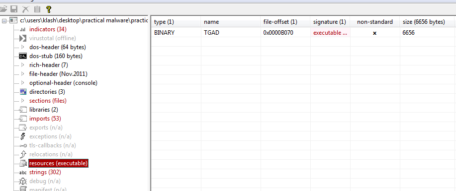

Practical Malware Analysis - Lab 10
Lab 10-1
This lab includes both a driver and an executable. You can run the executable from anywhere, but in order for the program to work properly, the driver must be placed in the C:WindowsSystem32 directory where it was originally found on the victim computer. The executable is Lab10-01.exe, and the driver is Lab10-01.sys.
Q1: Does this program make any direct changes to the registry? (Use procmon to check.)
Setting procmon filter for Lab10-01.sys/exe then running the exe
no regsetvalue no registries set
Q2: The user-space program calls the ControlService function. Can you set a breakpoint with WinDbg to see what is executed in the kernel as a result of the call to ControlService?
opening exe file into ida we see it creates a service named Lab10-01 using the file C:\\Windows\\System32\\Lab10-01.sys
with 0x01 service type which is SERVICE_KERNEL_DRIVER 0x00000001
the logic here when the create service returns non zero to eax means it failed meaning it couldnt create the service because it is already created so
it opens the service with the same name Lab10-01
Then it starts the service and after successful opening it calls ControlService with dwcontrol argument set to 0x01 SERVICE_CONTROL_STOP 0x00000001
So it starts the kernel driver then stops it, we need to put a breakpoint there at ControlService for the driver to be still in memory to be examined
Q3: What does this program do?
Going into WinDbg in the host machine, hitting break we know the service name started is Lab10-01
Lab 10-2
The file for this lab is Lab10-02.exe.
Q1: Does this program create any files? If so, what are they?
Q2: Does this program have a kernel component?
Q3: What does this program do?
Lab 10-3
This lab includes a driver and an executable. You can run the executable from anywhere, but in order for the program to work properly, the driver must be placed in the C:WindowsSystem32 directory where it was originally found on the victim computer. The executable is Lab10-03.exe, and the driver is Lab10-03.sys.
Q1: What does this program do?
Q2: Once this program is running, how do you stop it?
Q3: What does the kernel component do?